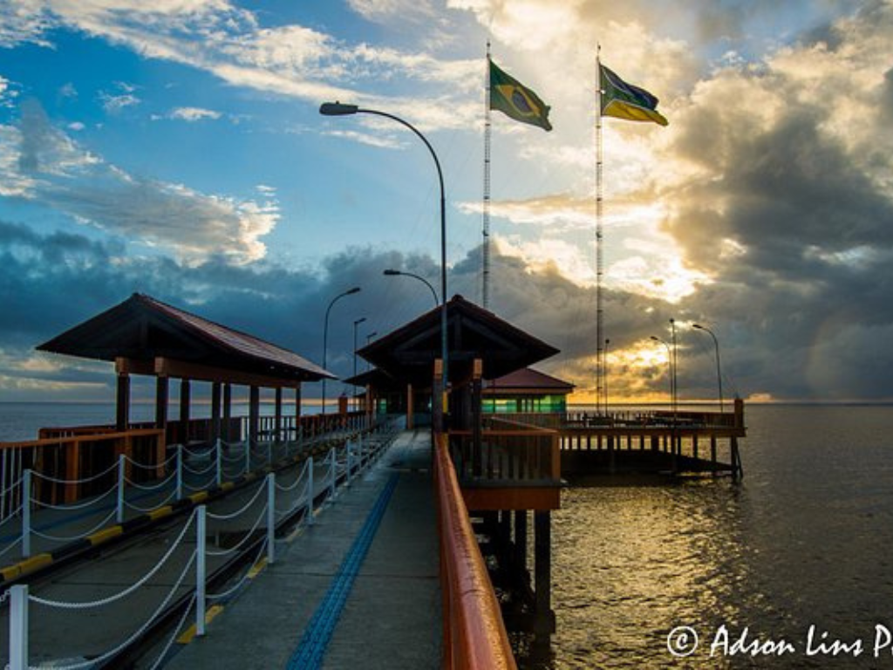

Sobre o Amapá
O Amapá é um dos estados mais diferentes e preservados do Brasil, cheio de características únicas. O estado “no meio do mundo” A capital Macapá é cortada pela Linha do Equador. Lá existe o famoso: Marco Zero do Equador Nesse lugar, dá para ficar literalmente com um pé no hemisfério Norte e outro no Sul. Não é ligado por estrada ao restante do Brasil O Amapá é o único estado brasileiro cuja capital não possui ligação rodoviária direta com o restante do país. Muitas viagens dependem de barco ou avião.
